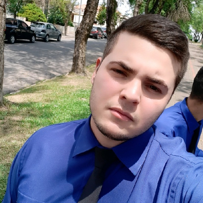

- Home
- ›
- Currículo
Currículo
Dados Pessoais

Nome:
Ramon Tuchinski Goslar
Data de Nascimento:
13/11/1996
Residência:
Lapa-Pr, Rua Eduardo Correa nº951, Vila Esperança.
Idiomas:
Português (nativo)
Inglês (iniciante)
Sobre Mim
Atualme me encontro mudando de carreira, busco uma vaga para atuar com o desenvolvimento front e back-end, desenvolvi uma paixão por técnologia e desejo fazer parte deste universo.
Educação
HTML/CSS + javascript
Estudando
Web Design Completo HTML/CSS - 8H
Banco de dados SQL
Estudando
Web API, ASP.NET Core
Estudando
Linguagem de programação "C#"
Estudando
Azure DevOps
Estudando
Habilidades
Front-end
Adoro trabalhar com a parte de criação de aplicações para a web, estudando diariamente para me aprimorar como profissional.
back-end
Iniciei meus estudos na linguagem c#, desenvolvendo aplicações de back-end, onde desenvolvi meu desejo pelo estudo da tecnologia.
Experiência
Back-end
Atividades e projetos desenvolvidos por mim como parte dos meus estudos.
Front-end
Este site portifólio feito por mim e os itens contidos na parte de portifólio.
Meus Projetos
Disponíveis tanto no GitHub, como na opção projetos do meu "site Portifólio", mostrando um pouco do meu desenvolvimento como profissional.
Contato
ramon.goslar202@gmail.com
(41)99553-5905
←Voltar ao início